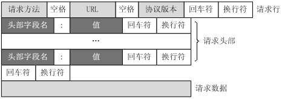

超文本传输协议(Hypertext Transfer Protocol，简称HTTP)是应用层协议。HTTP 是一种请求/响应式的协议，即一个客户端与服务器建立连接后，向服务器发送一个请求;服务器接到请求后，给予相应的响应信息。
HTTP报文是面向文本的，报文中的每一个字段都是一些ASCII码串，各个字段的长度是不确定的。HTTP有两类报文：请求报文和响应报文。
HTTP请求报文
HTTP 请求报文由请求行、请求头部、空行 和 请求包体(请求数据) 4 个部分组成，如下图所示：

＜request-line＞
＜headers＞
＜blank line＞
[＜request-body＞]
下面对请求报文格式进行简单的分析：
1. 请求行
请求行由请求方法字段、URL字段和HTTP协议版本字段3个字段组成，它们用空格分开。例如，GET /index.html HTTP/1.1。
HTTP协议的请求方法有GET、POST、HEAD、PUT、DELETE、OPTIONS、TRACE、CONNECT。
而常见的有如下几种：
1. GET
最常见的一种请求方式，当客户端要从服务器中读取文档时，当点击网页上的链接或者通过在浏览器的地址栏输入网址来浏览网页的，使用的都是GET方式。GET方法要求服务器将URL定位的资源放在响应报文的数据部分，回送给客户端。使用GET方法时，请求参数和对应的值附加在URL后面，利用一个问号（“?”）代表URL的结尾与请求参数的开始，传递参数长度受限制。例如，/index.jsp?id=100&op=bind,这样通过GET方式传递的数据直接表示在地址中，所以我们可以把请求结果以链接的形式发送给好友。以用google搜索domety为例，Request格式如下：
GET /search?hl=zh-CN&source=hp&q=domety&aq=f&oq= HTTP/1.1
Accept: image/gif, image/x-xbitmap, image/jpeg, image/pjpeg, application/vnd.ms-excel, application/vnd.ms-powerpoint,
application/msword, application/x-silverlight, application/x-shockwave-flash, */*
Referer: <a href="http://www.google.cn/">http://www.google.cn/</a>
Accept-Language: zh-cn
Accept-Encoding: gzip, deflate
User-Agent: Mozilla/4.0 (compatible; MSIE 6.0; Windows NT 5.1; SV1; .NET CLR 2.0.50727; TheWorld)
Host: <a href="http://www.google.cn">www.google.cn</a>
Connection: Keep-Alive
Cookie: PREF=ID=80a06da87be9ae3c:U=f7167333e2c3b714:NW=1:TM=1261551909:LM=1261551917:S=ybYcq2wpfefs4V9g;
NID=31=ojj8d-IygaEtSxLgaJmqSjVhCspkviJrB6omjamNrSm8lZhKy_yMfO2M4QMRKcH1g0iQv9u-2hfBW7bUFwVh7pGaRUb0RnHcJU37y-
FxlRugatx63JLv7CWMD6UB_O_r
可以看到，GET方式的请求一般不包含”请求内容”部分，请求数据以地址的形式表现在请求行。地址链接如下：
<a href="http://www.google.cn/search?hl=zh-CN&source=hp&q=domety&aq=f&oq=">http://www.google.cn/search?hl=zh-CN&source=hp
&q=domety&aq=f&oq=</a>
地址中”?”之后的部分就是通过GET发送的请求数据，我们可以在地址栏中清楚的看到，各个数据之间用”&”符号隔开。显然，这种方式不适合传送私密数据。另外，由于不同的浏览器对地址的字符限制也有所不同，一般最多只能识别1024个字符，所以如果需要传送大量数据的时候，也不适合使用GET方式。
2. POST
对于上面提到的不适合使用GET方式的情况，可以考虑使用POST方式，因为使用POST方法可以允许客户端给服务器提供信息较多, 比如完成表单数据的提交，将数据提交给服务器处理。。POST方法将请求参数封装在HTTP请求数据中，以名称/值的形式出现，可以传输大量数据，这样POST方式对传送的数据大小没有限制，而且也不会显示在URL中。还以上面的搜索dome为例，如果使用POST方式的话，格式如下：
POST /search HTTP/1.1
Accept: image/gif, image/x-xbitmap, image/jpeg, image/pjpeg, application/vnd.ms-excel, application/vnd.ms-powerpoint,
application/msword, application/x-silverlight, application/x-shockwave-flash, */*
Referer: <a href="http://www.google.cn/">http://www.google.cn/</a>
Accept-Language: zh-cn
Accept-Encoding: gzip, deflate
User-Agent: Mozilla/4.0 (compatible; MSIE 6.0; Windows NT 5.1; SV1; .NET CLR 2.0.50727; TheWorld)
Host: <a href="http://www.google.cn">www.google.cn</a>
Connection: Keep-Alive
Cookie: PREF=ID=80a06da87be9ae3c:U=f7167333e2c3b714:NW=1:TM=1261551909:LM=1261551917:S=ybYcq2wpfefs4V9g;
NID=31=ojj8d-IygaEtSxLgaJmqSjVhCspkviJrB6omjamNrSm8lZhKy_yMfO2M4QMRKcH1g0iQv9u-2hfBW7bUFwVh7pGaRUb0RnHcJU37y-
FxlRugatx63JLv7CWMD6UB_O_r
hl=zh-CN&source=hp&q=domety
可以看到，POST方式请求行中不包含数据字符串，这些数据保存在”请求内容”部分，各数据之间也是使用”&”符号隔开。POST方式大多用于页面的表单中。因为POST也能完成GET的功能，因此多数人在设计表单的时候一律都使用POST方式，其实这是一个误区。GET方式也有自己的特点和优势，我们应该根据不同的情况来选择是使用GET还是使用POST。
3. HEAD
HEAD就像GET，只不过服务端接受到HEAD请求后只返回响应头，而不会发送响应内容。当我们只需要查看某个页面的状态的时候，使用HEAD是非常高效的，因为在传输的过程中省去了页面内容。
2. 请求头部
请求头部由关键字/值对组成，每行一对，关键字和值用英文冒号“:”分隔。请求头部通知服务器有关于客户端请求的信息，典型的请求头有：
-
User-Agent：产生请求的浏览器类型。
-
Accept：客户端可识别的内容类型列表。星号 “ * ” 用于按范围将类型分组，用 “ / ” 指示可接受全部类型，用“ type/* ”指示可接受 type 类型的所有子类型;
-
Accept-Language：客户端可接受的自然语言;
-
Accept-Encoding：客户端可接受的编码压缩格式;
-
Accept-Charset：可接受的应答的字符集;
-
Host：请求的主机名，允许多个域名同处一个IP地址，即虚拟主机。
-
connection：连接方式(close 或 keepalive);
-
Cookie：存储于客户端扩展字段，向同一域名的服务端发送属于该域的cookie;
3. 空行
最后一个请求头之后是一个空行，发送回车符和换行符，通知服务器以下不再有请求头。
4.请求数据
请求数据不在GET方法中使用，而是在POST方法中使用。POST方法适用于需要客户填写表单的场合。与请求数据相关的最常使用的请求头是Content-Type和Content-Length。
##HTTP响应报文
HTTP响应也由三个部分组成，分别是：状态行、消息报头、响应正文。
如下所示，HTTP响应的格式与请求的格式十分类似：
＜status-line＞
＜headers＞
＜blank line＞
[＜response-body＞]
正如你所见，在响应中唯一真正的区别在于第一行中用状态信息代替了请求信息。状态行（status line）通过提供一个状态码来说明所请求的资源情况。
1. 状态行
状态行格式如下：
HTTP-Version Status-Code Reason-Phrase CRLF
其中，HTTP-Version表示服务器HTTP协议的版本；Status-Code表示服务器发回的响应状态代码；Reason-Phrase表示状态代码的文本描述,他们之间使用空格隔开。状态代码由三位数字组成，第一个数字定义了响应的类别，且有五种可能取值。
-
1xx：指示信息--表示请求已接收，继续处理。
-
2xx：成功--表示请求已被成功接收、理解、接受。
-
3xx：重定向--要完成请求必须进行更进一步的操作。
-
4xx：客户端错误--请求有语法错误或请求无法实现。
-
5xx：服务器端错误--服务器未能实现合法的请求。
常见状态代码、状态描述的说明如下。
-
200 OK：客户端请求成功。
-
400 Bad Request：客户端请求有语法错误，不能被服务器所理解。
-
401 Unauthorized：请求未经授权，这个状态代码必须和WWW-Authenticate报头域一起使用。
-
403 Forbidden：服务器收到请求，但是拒绝提供服务。
-
404 Not Found：请求资源不存在，举个例子：输入了错误的URL。
-
500 Internal Server Error：服务器发生不可预期的错误。
-
503 Server Unavailable：服务器当前不能处理客户端的请求，一段时间后可能恢复正常，举个例子：HTTP/1.1 200 OK（CRLF）。
2. 响应头部
响应头可能包括：
-
Location：Location响应报头域用于重定向接受者到一个新的位置。例如：客户端所请求的页面已不存在原先的位置，为了让客户端重定向到这个页面新的位置，服务器端可以发回Location响应报头后使用重定向语句，让客户端去访问新的域名所对应的服务器上的资源;
-
Server：Server 响应报头域包含了服务器用来处理请求的软件信息及其版本。它和 User-Agent 请求报头域是相对应的，前者发送服务器端软件的信息，后者发送客户端软件(浏览器)和操作系统的信息。
-
Vary：指示不可缓存的请求头列表;
-
Connection：连接方式;
- 对于请求来说：close(告诉 WEB 服务器或者代理服务器，在完成本次请求的响应后，断开连接，不等待本次连接的后续请求了)。keepalive(告诉WEB服务器或者代理服务器，在完成本次请求的响应后，保持连接，等待本次连接的后续请求);
- 对于响应来说：close(连接已经关闭); keepalive(连接保持着，在等待本次连接的后续请求); Keep-Alive：如果浏览器请求保持连接，则该头部表明希望WEB 服务器保持连接多长时间(秒);例如：Keep-Alive：300;
-
WWW-Authenticate：WWW-Authenticate响应报头域必须被包含在401 (未授权的)响应消息中，这个报头域和前面讲到的Authorization 请求报头域是相关的，当客户端收到 401 响应消息，就要决定是否请求服务器对其进行验证。如果要求服务器对其进行验证，就可以发送一个包含了Authorization 报头域的请求;
3. 空行
空行：最后一个响应头部之后是一个空行，发送回车符和换行符，通知服务器以下不再有响应头部。
4. 响应正文
服务器返回给客户端的文本信息;
下面给出一个HTTP响应报文例子:
HTTP/1.1 200 OK
Date: Sat, 31 Dec 2005 23:59:59 GMT
Content-Type: text/html;charset=ISO-8859-1
Content-Length: 122
＜html＞
＜head＞
＜title＞Wrox Homepage＜/title＞
＜/head＞
＜body＞
＜!-- body goes here --＞
＜/body＞
＜/html＞
关于HTTP请求GET和POST的区别
1. 提交方式
GET提交: 请求的数据会附在URL之后（就是把数据放置在HTTP协议头＜request-line＞中），以?分割URL和传输数据，多个参数用&连接;例如：login.action?name=hyddd&password=idontknow&verify=%E4%BD%A0 %E5%A5%BD。如果数据是英文字母/数字，原样发送，如果是空格，转换为+，如果是中文/其他字符，则直接把字符串用BASE64加密，得出如： %E4%BD%A0%E5%A5%BD，其中％XX中的XX为该符号以16进制表示的ASCII。
**POST提交: 把提交的数据放置在是HTTP包的请求数据＜request-body＞中。**上文示例中红色字体标明的就是实际的传输数据。
因此，GET提交的数据会在地址栏中显示出来，而POST提交，地址栏不会改变。
2. 传输数据的大小：
首先声明,HTTP协议没有对传输的数据大小进行限制，HTTP协议规范也没有对URL长度进行限制。 而在实际开发中存在的限制主要有：
- GET:特定浏览器和服务器对URL长度有限制，例如IE对URL长度的限制是2083字节(2K+35)。对于其他浏览器，如Netscape、FireFox等，理论上没有长度限制，其限制取决于操作系统的支持。
因此对于GET提交时，传输数据就会受到URL长度的限制。 - ** POST:由于不是通过URL传值，理论上数据不受限**。但实际各个WEB服务器会规定对post提交数据大小进行限制，Apache、IIS6都有各自的配置。
3. 安全性：
POST的安全性要比GET的安全性高。注意：这里所说的安全性和上面GET提到的“安全”不是同个概念。上面“安全”的含义仅仅是不作数据修改，而这里安全的含义是真正的Security的含义，比如：通过GET提交数据，用户名和密码将明文出现在URL上，因为(1)登录页面有可能被浏览器缓存， (2)其他人查看浏览器的历史纪录，那么别人就可以拿到你的账号和密码了。
HTTP 工作原理
HTTP 协议采用请求/响应模型。客户端向服务器发送一个请求报文，服务器以一个状态作为响应。
以下是 HTTP 请求/响应的步骤：
-
客户端连接到web服务器：HTTP 客户端与web服务器建立一个 TCP 连接;
-
客户端向服务器发起 HTTP 请求：通过已建立的TCP 连接，客户端向服务器发送一个请求报文;
-
服务器接收 HTTP 请求并返回 HTTP 响应：服务器解析请求，定位请求资源，服务器将资源副本写到 TCP 连接，由客户端读取;
-
释放 TCP 连接：若connection 模式为close，则服务器主动关闭TCP 连接，客户端被动关闭连接，释放TCP 连接;若connection 模式为keepalive，则该连接会保持一段时间，在该时间内可以继续接收请求;
5. 客户端浏览器解析HTML内容：客户端将服务器响应的 html 文本解析并显示;
例如：在浏览器地址栏键入URL，按下回车之后会经历以下流程：
-
浏览器向 DNS 服务器请求解析该 URL 中的域名所对应的 IP 地址;
-
解析出 IP 地址后，根据该 IP 地址和默认端口 80，和服务器建立 TCP 连接;
-
浏览器发出读取文件(URL 中域名后面部分对应的文件)的HTTP 请求，该请求报文作为 TCP 三次握手的第三个报文的数据发送给服务器;
-
服务器对浏览器请求作出响应，并把对应的 html 文本发送给浏览器;
-
释放 TCP 连接;
-
浏览器将该 html 文本并显示内容;
HTTP 无状态性
HTTP 协议是无状态的(stateless)。也就是说，同一个客户端第二次访问同一个服务器上的页面时，服务器无法知道这个客户端曾经访问过，服务器也无法分辨不同的客户端。HTTP 的无状态特性简化了服务器的设计，使服务器更容易支持大量并发的HTTP 请求。
HTTP 持久连接
HTTP1.0 使用的是非持久连接，主要缺点是客户端必须为每一个待请求的对象建立并维护一个新的连接，即每请求一个文档就要有两倍RTT的开销。因为同一个页面可能存在多个对象，所以非持久连接可能使一个页面的下载变得十分缓慢，而且这种短连接增加了网络传输的负担。HTTP1.1 使用持久连接keepalive，所谓持久连接，就是服务器在发送响应后仍然在一段时间内保持这条连接，允许在同一个连接中存在多次数据请求和响应，即在持久连接情况下，服务器在发送完响应后并不关闭TCP连接，而客户端可以通过这个连接继续请求其他对象。
HTTP/1.1 协议的持久连接有两种方式：
● 非流水线方式：客户在收到前一个响应后才能发出下一个请求;
● 流水线方式：客户在收到 HTTP 的响应报文之前就能接着发送新的请求报文;
最后给出一个具体例子：
Remote Address:116.57.254.104:80
Request URL:http://hr.tencent.com/
Request Method:GET
Status Code:200 OK
Request Headers
GET / HTTP/1.1
Host: hr.tencent.com
Connection: keep-alive
Accept: text/html,application/xhtml+xml,application/xml;q=0.9,image/webp,*/*;q=0.8
User-Agent: Mozilla/5.0 (X11; Linux i686) AppleWebKit/537.36 (KHTML, like Gecko) Chrome/35.0.1916.114 Safari/537.36
Accept-Encoding: gzip,deflate,sdch
Accept-Language: en-US,en;q=0.8,zh-CN;q=0.6,zh;q=0.4
Cookie: pgv_pvi=2098703360; PHPSESSID=bc7onl0dojbsatscsfv79pds77; pgv_info=ssid=s1454606128;
pgv_pvid=926725350; ts_uid=4084753309
Response Header
HTTP/1.1 200 OK
Server: nginx
Date: Mon, 26 Jan 2015 01:09:10 GMT
Content-Type: text/html;charset=utf-8
Content-Length: 3631
Connection: keep-alive
X-Powered-By: PHP/5.3.10
Expires: Thu, 19 Nov 1981 08:52:00 GMT
Cache-Control: no-store, no-cache, must-revalidate, post-check=0, pre-check=0
Pragma: no-cache
Vary: Accept-Encoding
Content-Encoding: gzip
从请求报文可以知道：
GET / HTTP/1.1
请求方法 GET 表示一个读取请求，将从服务器获得网页数据，/表示URL 的路径，URL 总是以/开头，/就表示首页，最后的HTTP/1.1 指示采用的 HTTP 协议版本是 1.1;请求域名如下所示：
Host: hr.tencent.com
响应报文如下：
HTTP/1.1 200 OK
Server: nginx